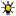

Raschpëtzer
Useful Information
| Location: |
Route CR 125, L-7211 Helmsange.
A7 exit 1 Waldhof, N11 towards Echternach 1 km, first exit on CR126 Rue Prince Henri towards Walferdange 3.3 km. Parkin Lot Raschpëtzer, 500 m/5 min to the aqueduct. (49.6662513, 6.1480079) |
| Open: |
APR to OCT Sun 14:30-17:30. [2026] |
| Fee: |
free. [2026] |
| Classification: | Qanat Water Supply |
| Light: |
 Electric Light |
| Dimension: | L=700 m, VR=36 m. |
| Guided tours: | |
| Photography: | |
| Accessibility: | |
| Bibliography: | |
| Address: |
Administration communale de Walferdange, Place de la Mairie, B.P. 1, L-7201 Walferdange, Tel: +352-33-01-44-1.
secretariat@walfer.lu
SIT Walfer info@sitwalfer.lu |
| As far as we know this information was accurate when it was published (see years in brackets), but may have changed since then. Please check rates and details directly with the companies in question if you need more recent info. |
|
History
Description
Raschpëtzer is a word in the local german dialect which is spoken in Luxembourg, a language called Letzeburgisch. It is the name of a water collector, which was built around 130 by the Romans to supply drinking water to a Roman settlement. Generally all Roman water canals are called aqueduct, this one is often called a quanat. Actually the structure of this collector system was copied from the desert areas of Iran, where shafts and tunnels were used to collect groundwater over large areas and transport them to a city. With a length of 700 m passages and a maximum depth of 36 m below the surface this structure is quite big. Until today, it produces up to 180 m³ of drinking water per day.
The site has numerous surface structures, like the closed shaft holes and the closed entrances of the tunnels as well as several artificial springs. Obviously it is possible to visit the site without restrictions, supported by several explanatory signs which were erected to explain the different structures. Additionally, it’s possible to enter the quanat with a guided tours in Letzeburgisch, French, German or English. Unfortunately the status of those tours is difficult. It seems the regular open Sundays with a guided tour at 17:00 were discontinued. We have given two contacts, the mairie of Walferdange, which offers a pdf for download to request a guided tour, and the SIT Walfer, a sort of non-commercial tourist bureau. Both may help you. If you visited the site and have first hand info, please send us an update.
 Search DuckDuckGo for "Raschpëtzer"
Search DuckDuckGo for "Raschpëtzer" Google Earth Placemark
Google Earth Placemark OpenStreetMap
OpenStreetMap Index
Index Topics
Topics Hierarchical
Hierarchical Countries
Countries Maps
Maps